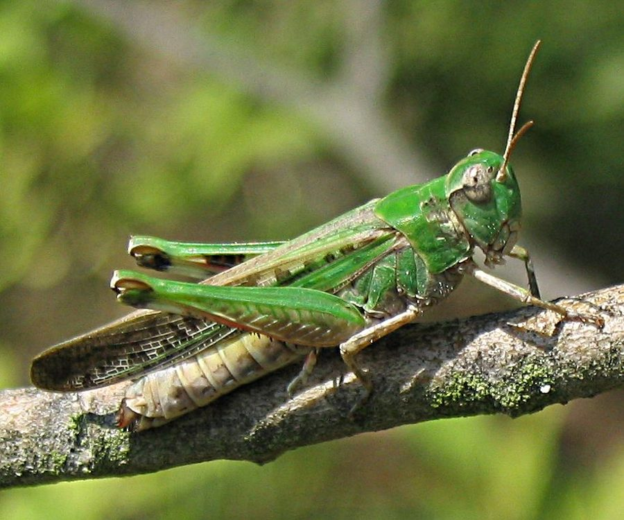

स्लेंडर ग्रीन-विंग्ड ग्रासहॉपरSlender Green-winged Grasshopper
Aiolopus thalassinus · Acrididae · INS-0290

- Scientific name वैज्ञानिक नाम
- Aiolopus thalassinus (Fabricius, 1781)
- Family कुल
- Acrididae
- Hindi हिंदी
- स्लेंडर ग्रीन-विंग्ड ग्रासहॉपर
- Local names स्थानीय नाम
- slender green-winged grasshopper
- Status here यहाँ की स्थिति
- native
- Movement आवागमन
- Resident, here all year
- Known from कहाँ दर्ज
- Others have published records from the wider Awadh–Purvanchal plain, none yet from Basti–Ayodhya अवध–पूर्वांचल से दूसरों के प्रकाशित अभिलेख, बस्ती–अयोध्या से अभी नहीं
- IUCN IUCN
- not evaluated
- Review समीक्षा
- not yet reviewed
When to look कब देखें
Expected mainly in February, March, April, May, June, July, August, September, October, November. मुख्यतः फ़रवरी, मार्च, अप्रैल, मई, जून, जुलाई, अगस्त, सितंबर, अक्टूबर, नवंबर में अपेक्षित।
Tell it apart from इनसे अलग पहचानें
स्लेंडर ग्रीन-विंग्ड ग्रासहॉपर / Slender Green-winged Grasshopper
Aiolopus thalassinus (Fabricius, 1781) — Acrididae
स्लेंडर ग्रीन-विंग्ड ग्रासहॉपर — नमी वाले घास के मैदानों, नदी कछारों और खेतों की मेड़ों पर मिलने वाला एक फुर्तीला, पतला हरा-भूरा टिड्डा।
Quick Identification त्वरित पहचान
| Feature | Description |
|---|---|
| Body shape | Slender, streamlined, elongate cylindrical grasshopper |
| Coloration | Pale emerald green to olive brown with cryptic dark brownish mottling |
| Pronotum | Narrow, slightly saddle-shaped with fine linear median carina |
| Tegmina | Long, surpassing abdomen tip, translucent brownish with smoky patches |
| Hind wings | Transparent hyaline with delicate sea-green or yellowish basal wash |
| Hind tibiae | Reddish or pale purplish towards apex, preceded by pale yellowish band |
Field tip: Runs and flushes rapidly through wet grass; look for the slender green or mottled brown body and the reddish flush on the lower hind leg.
हिंदी: पतला हरा या चितकबरा भूरा शरीर, पारदर्शी पंखों के आधार पर हल्का समुद्री हरापन और पिछली टांगों का लाल सिरा इसकी पहचान है।
Morphology आकारिकी
Measurement not available in consulted sources.
A slender, medium-small acridid grasshopper with a remarkably streamlined build adapted for swift leaping and sustained flight over open grasses. The head is subconical, sloping anteriorly, with prominent oval compound eyes set high on the vertex. The fastigium of the vertex is pentagonal and slightly depressed with distinct lateral margins. Antennae are filiform, slender, slightly longer than the head and pronotum combined.
The pronotum is slightly constricted before the middle, with a fine and distinct median longitudinal carina cut by a single transverse sulcus behind the middle; lateral carinae are obsolete or weakly defined. Coloration is highly variable between green and brown morphs: green morphs display vivid bright green on the face, pronotal sides, and basal tegmina, whereas brown morphs are mottled in sandy ochre, grey, and dark fuscous.
The tegmina are well developed, narrow, extending well past the apex of the abdomen and hind knees, bearing pale and dusky transverse patches along the discoidal area. The hind wings are broad, transparent hyaline, washed with delicate sea-green (thalassine) or faint yellowish tint at the extreme base, and clear apically. The hind femora are slender; the hind tibiae are pale straw-colored basally with a dark ring, turning pinkish-red or purplish towards the spinose apex.
हिंदी: इसका शरीर हल्का और सुगठित होता है। चेहरे और पीठ पर हरा या भूरा रंग होता है। इसके पिछले पंख पारदर्शी होते हैं और पिछली टांगों के निचले हिस्से पर लाल रंग की झलक होती है।
Behaviour & Ecology व्यवहार और पारिस्थितिकी
Aiolopus thalassinus is a highly mobile, ground-and-grass dwelling orthopteran. It inhabits moist open habitats where grass cover is continuous but relatively low, such as river sandbars, grazing meadows, and paddy borders. When disturbed, adults launch into rapid, low-trajectory flights of several meters before plunging into vegetation and immediately aligning their body along grass stems.
Both nymphs and adults feed primarily on graminoids (grasses and sedges). The species exhibits high tolerance to temperature fluctuations and short-term desiccation, though it maintains greatest abundance near watercourses and irrigated crops (Ibrahim 1973). Adults communicate through weak stridulation produced by rubbing the inner ridge of the hind femur against the tegminal vein.
हिंदी: यह घास के मैदानों और मेड़ों पर तेजी से फुदकता और उड़ता है। आहट मिलते ही यह तुरंत उड़कर घास के तिनकों के बीच छिप जाता है।
Life Cycle / Phenology जीवन चक्र
In the subtropical climate of eastern Uttar Pradesh, Aiolopus thalassinus breeds continuously across multiple overlapping generations per year. Peak breeding coincides with the post-monsoon flush of fresh green grasses from August through October.
Females oviposit cylindrical egg pods containing several dozen eggs into soft, moist sandy loam near canal banks and pasture margins. Eggs hatch within a few weeks under warm monsoon temperatures. Nymphs pass through several nymphal instars, developing adult wings within a month. Adults survive the winter in low activity, sheltering among dense tussocks of perennial grass.
हिंदी: साल में कई पीढ़ियां होती हैं। मादा नमी वाली मिट्टी में अंडे देती है। बच्चे कुछ ही हफ्तों में वयस्क बन जाते हैं और जाड़ों में घनी घास में छिपे रहते हैं।
Host Plants or Prey आहार
Strictly herbivorous with a strong preference for grasses (Poaceae) and sedges (Cyperaceae). Observed feeding on cynodon grass (Cynodon dactylon), barnyard grass (Echinochloa colona), wild rice shoots, and young foliage of wheat and maize seedlings along field edges. Co-occurs on grasses with Oxya hyla and Oxya fuscovittata.
हिंदी: यह केवल घास और चारे की पत्तियां खाता है, जैसे दूब घास, सांवा घास और धान व गेहूं के कोमल पौधे।
Predators / Natural Enemies शत्रु
An essential component of the lower food web across rural Awadh. Adults and nymphs are preyed upon heavily by insectivorous birds, including cattle egrets, drongos, babblers, and lapwings. In the grass canopy, jumping spiders, robber flies, and praying mantises capture nymphs, while ground-foraging toads and frogs consume adults at night.
हिंदी: बगुले, भुजंगे, मैना और अन्य पक्षी इसे बड़े चाव से खाते हैं। मकड़ियां और मेंढक भी इसे अपना शिकार बनाते हैं।
Agricultural / Human Relevance कृषि प्रासंगिकता
While classified in agricultural texts as a minor pest of rice, wheat, and fodder grasses, Aiolopus thalassinus rarely forms devastating swarms in the Gangetic plain. It acts primarily as an endemic folivore and an invaluable nutritional resource for wetland birds and farmland wildlife.
हिंदी: खेतों में यह बहुत मामूली नुकसान करता है और इसे बड़ा हानिकारक कीट नहीं माना जाता। यह स्थानीय पक्षियों के लिए भोजन का मुख्य स्रोत है।
Expected Locally स्थानीय रूप से अपेक्षित
Not a field record. Written from published accounts for eastern Uttar Pradesh. No confirmed local sighting yet — if you have seen it, that is what the atlas needs.
अभी तक स्थानीय पुष्टि नहीं। यह विवरण प्रकाशित स्रोतों से है, किसी अवलोकन से नहीं।
GBIF holds published records from the wider Awadh–Purvanchal plain, none yet from Basti–Ayodhya. Expected throughout the district along the sandy floodplains of the Ghaghara and Kuwana, as well as on damp paddy bunds across Harraiya and Basti tehsils. Look in wet grass during morning walks; flushers that land on grass blades and show reddish hind ankles are prime candidates. A first record would be a photograph of the adult with place and date, sent through the About page.
Distribution वितरण
Global range: Widespread across the Old World, from southern Europe, Africa, and the Middle East through South Asia to Southeast Asia and Australia.
In India: Found across all Indian states and union territories in open grasslands, cultivated fields, and river floodplains.
In Uttar Pradesh: Recorded from across the Gangetic plain, particularly throughout agricultural districts and wetland tracts.
In Basti district / eastern UP: Expected along river alluvium, canal banks, and pastoral grazing lands across the entire rural landscape.
हिंदी: यह एशिया, यूरोप और अफ्रीका में व्यापक रूप से पाया जाता है। उत्तर प्रदेश में यह सभी नम घास के इलाकों और खेतों में मौजूद है।
Research Questions शोध प्रश्न
- How do green and brown morph ratios of Aiolopus thalassinus shift between pre-monsoon dry season and post-monsoon lush conditions in Basti?
- Does the species cause measurable yield reduction in early rabi wheat seedling stands along canal seepage belts?
- What proportion of the diet of local wintering egret flocks is composed of this grasshopper?
- क्या बस्ती जनपद की नहरों के किनारे यह टिड्डा साल भर बिना शीतकालीन विश्राम के प्रजनन करता है?
- क्या धान की कटाई के बाद गेहूं की बुवाई के समय इसकी आबादी में गिरावट आती है?
Similar Species मिलती-जुलती प्रजातियाँ
| Species | Key Difference | हिंदी | |
|---|---|---|---|
| Oxya hyla ([[small_rice_grasshopper | Small Rice Grasshopper]]) | Body greener, thicker; distinct dark brown lateral band from eye along pronotum; bluish hind tibiae | छोटा धान का टिड्डा |
| Oxya fuscovittata ([[paddy_grasshopper | Paddy Grasshopper]]) | Broader body; prominent dark lateral stripe; found directly in standing water paddies; legs lack red tint | धान का टिड्डा |
| Spathosternum prasiniferum (Grasshopper) | Much smaller; distinctly flattened head and broad dark lateral pronotal bands; blunt abdomen | छोटा हरा टिड्डा |
Field rule: Slender streamlined body without heavy dark lateral stripe, transparent wings with delicate sea-green base, and reddish lower hind leg = Aiolopus thalassinus.
Taxonomy & Classification वर्गीकरण
Original description. Described by Johan Christian Fabricius (1781) in Species Insectorum, vol. 1, p. 367, under the original name Gryllus thalassinus. The specific epithet thalassinus is Latin for sea-green, referring to the delicate greenish wash at the base of the membranous hind wings.
Subspecies. Subspecies Aiolopus thalassinus tamulus (Fabricius, 1798) is frequently cited for South and East Asian populations, distinguished by subtle tegminal markings.
Family and order placement. Order Orthoptera, suborder Caelifera, family Acrididae (short-horned grasshoppers), subfamily Oedipodinae (band-winged grasshoppers).
IUCN status rationale. Not evaluated. Highly abundant and widespread worldwide with extensive ecological tolerance.
हिंदी: इसे 1781 में फैब्रिकियस ने Gryllus thalassinus नाम दिया था। यह एक्रीडिडी परिवार का सदस्य है और दुनिया भर में पाया जाता है।
Photo Gallery फोटो गैलरी
No photos yet — add field photos to media/species/slender_green_winged_grasshopper/ and run node scripts/sync_photos.js.
Photos needed आवश्यक फोटो
- [ ] Adult lateral view showing slender body and hind leg coloration (घास पर बैठे टिड्डे की पार्श्व तस्वीर)
- [ ] Specimen with wings spread showing greenish wash on hind wing base (खुले पंखों वाले टिड्डे की तस्वीर)
References संदर्भ
- Fabricius, J. C. (1781). Species Insectorum. Vol. 1, Hamburgi et Kilonii, 552 pp. (as Gryllus thalassinus).
- Kirby, W. F. (1914). The Fauna of British India, including Ceylon and Burma: Orthoptera (Acridiidae). Taylor and Francis, London, pp. 214–215.
- Ibrahim, M. M. (1973). Survival of Starved Aiolopus thalassinus F. (Orthoptera: Acrididae). Zeitschrift für Angewandte Entomologie, 73(3), pp. 337–340. doi:10.1111/j.1439-0418.1973.tb02298.x
- GBIF Occurrence Data — Aiolopus thalassinus, India (2025).
Source file: species/fauna/insects/slender_green_winged_grasshopper.md